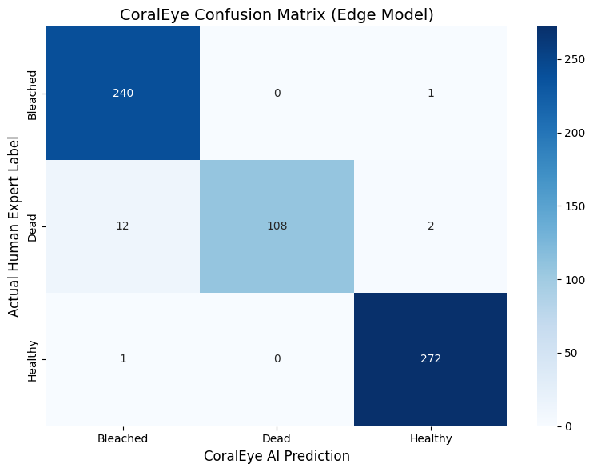

NOIMAGE
CoralEye
FINISHEDCoral reefs across the Coral Triangle are experiencing unprecedented thermal stress, and the window for effective local mitigation of bleaching events is often measured in days, not months. Yet the standard reef-monitoring pipeline — collecting benthic imagery via divers or remotely operated vehicles (ROVs) and manually annotating it for signs of bleaching — routinely takes weeks to complete, a delay we term the manual-annotation bottleneck. This paper presents CoralEye, a decentralized, edge-optimized computer vision framework that diagnoses coral health in real time and is designed to eventually run entirely offline on consumer-grade hardware. CoralEye uses an optimized MobileNetV2 architecture, quantized to INT8 for edge deployment, trained on a curated subset of the Benthic Habitat Data (BHD) dataset to classify reef imagery into a three-class triage system — Healthy, Bleached, and Dead. On a held-out test set of 636 images, the framework achieved an overall accuracy of 97% (weighted-average precision 0.98, recall 0.97, F1-score 0.97) while processing underwater imagery at an average latency of 177 milliseconds per frame (∼5.6 FPS), benchmarked in a Google Colab CPU-only cloud runtime as a proxy for offline, GPU-free edge hardware. Relative to established manual annotation workflows such as Coral Point Count (CPCe), this proxy benchmark suggests a reduction in per-image processing time of over 99%, though this comparison has not yet been validated on a physical field device. We argue that this combination of accuracy and CPU-only efficiency is a promising step toward a shift in marine conservation technology from post-mortem documentation toward real-time, actionable diagnostics — particularly for under-resourced reef managers in bandwidth-constrained coastal communities, pending further validation on physical field hardware.
READ THE PAPER →